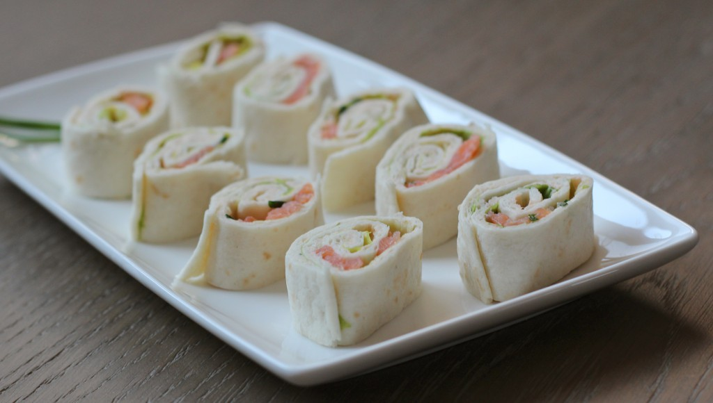
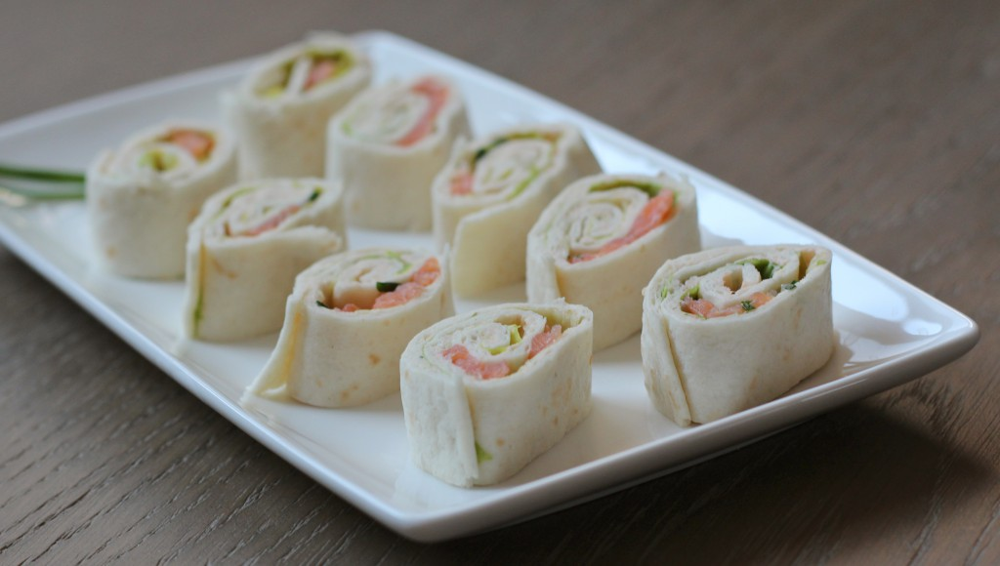
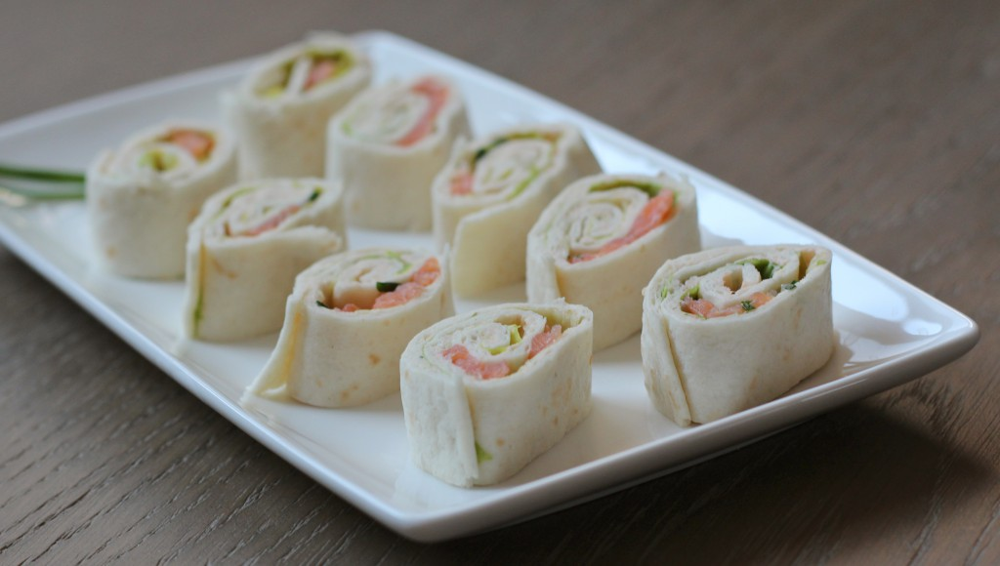

HOME
Op deze pagina kun je informatie vinden over hoe je
gehaktbrood kunt maken met een lekker voorgerecht
en een lekker nagerecht er bij.
 


Op deze pagina kun je informatie vinden over hoe je
gehaktbrood kunt maken met een lekker voorgerecht
en een lekker nagerecht er bij.
